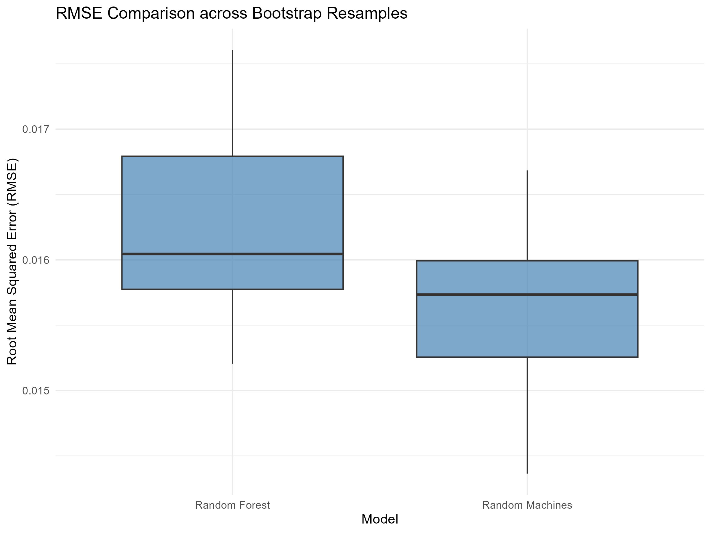
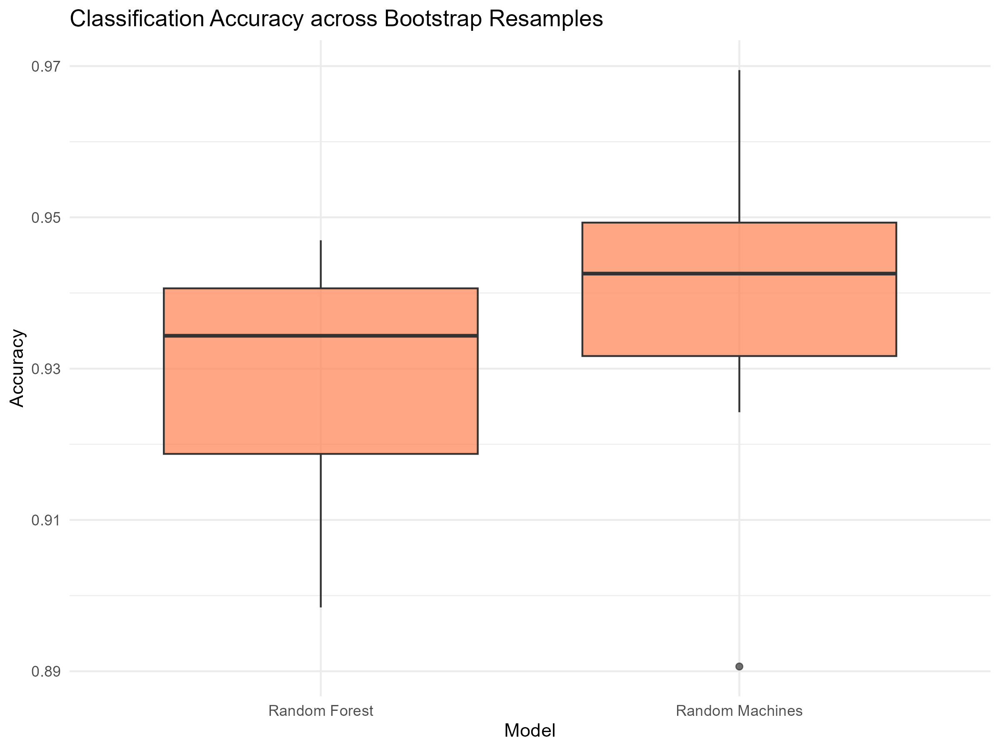

15 April 2026
randomMachines (Maia et al. 2025) is an R package that implements a flexible ensemble strategy for support vector machines (SVMs) (Cortes and Vapnik 1995) in both classification and regression settings. The method combines bagging with diversity induced by multiple kernel functions (e.g., Gaussian, polynomial, Laplacian, and linear), combining base learners to capture heterogeneous nonlinear structures in the data. Individual models are trained on bootstrap samples and aggregated with performance-based weights derived from out-of-bag evaluation, yielding an ensemble with improved robustness to the kernel selection and competitive predictive performance relative to common baselines (Ara et al. 2021, 2022).
The randomMachines package provides an implementation of the random machines method (Ara et al. 2021, 2022) an ensemble methodology, employing Support Vector Machines (SVM) (Cortes and Vapnik 1995) as base learners combined with diverse kernel functions in a bagging structure. This software is designed to address specific limitations in ensemble modeling, particularly around flexibility and predictive power in both classification and regression tasks.
Traditional ensemble techniques, such as Random Forests and standard bagged SVMs, achieve higher predictive accuracy by combining multiple base models. However, these methods face challenges: (1) Random Forests rely exclusively on decision trees, limiting flexibility in scenarios where complex non-linear kernel-based learners might perform better, and (2) standard SVM-based ensembles often use a single kernel function across all base learners, which can restrict the model’s ability to capture complex patterns within high-dimensional or nonlinear data. The randomMachines package addresses these gaps by leveraging multiple kernel functions in the ensemble, enhancing predictive accuracy across diverse data contexts.
By integrating SVMs with a flexible choice of kernel functions—including Gaussian, polynomial, Laplacian, and linear kernels—randomMachines introduces a weighted, bagged model that adapts dynamically to data characteristics. Its implementation builds upon recent research advancements in ensemble support vector models, specifically those demonstrating that diverse kernel ensembles can lead to significant improvements in predictive performance (Maia et al. 2021; Ara et al. 2022). This approach has shown strong performance indicating high predictive accuracy in domains where complex interactions and non-linear relationships are prevalent, such as bioinformatics, image classification, and financial forecasting.
randomMachines emerges as an effective tool as an effective tool for researchers and practitioners seeking enhanced flexibility and performance in ensemble modeling, expanding the applicability of SVM-based techniques across a range of scientific and applied disciplines.
Recently, Random Machines has been employed by several authors in both theoretical developments and applied studies Yu and Wenbing (2025).
Let \(\{(\mathbf{x}_i, y_i)\}_{i=1}^{n}\) be a training dataset where \(\mathbf{x}_i \in \mathbb{R}^p\) represents the input vector and \(y_i\) is the target variable, which can be either categorical (\(y_i \in \{-1,1\}\) for classification) or continuous (\(y_i \in \mathbb{R}\) for regression). The randomMachines method follows a structured bagging-based approach, incorporating a probabilistic selection of kernel functions to increase model diversity and consequently the predictive performance.
Given a predefined set of \(R\) kernel functions \(\{K_r(\mathbf{x}, \mathbf{x}')\}_{r=1}^{R}\), individual models \(h_r(\mathbf{x})\) are trained on a validation set. The probability of selecting each kernel is computed differently for classification and regression.
For classification, the model selection probability \(\lambda_r\) is determined based on a performance measure \(0 \le P \le 1\), when \(P=0.5\) indicates a random prediction:
\[\lambda_r = \frac{\log\left(\frac{\text{P}_r}{1 - \text{P}_r}\right)}{\sum_{i=1}^{R} \log\left(\frac{\text{P}_i}{1 - \text{P}_i}\right)}\]
where \(\text{P}_r\) represents the performance measure of model \(h_r(\mathbf{x})\).
For regression, the probability of selecting each kernel is determined using a performance measure \(Q \ge 0\), when \(Q=0\) indicates a perfect prediction:
\[ \lambda_r = \frac{e^{-\beta \delta_r}}{\sum_{j=1}^{R} e^{-\beta \delta_j}} \]
where \(\delta_r\) is the standardized \(P\) of each kernel-based model, and \(\beta\) is a regularization parameter controlling the degree of penalization of kernels with higher error over the validation set.
For both classification and regression, \(B\) bootstrap samples are drawn from the original training data. Each sample is used to train a support vector model \(g_b(\mathbf{x})\) using a kernel selected randomly with probability \(\lambda_r\). The models are assigned weights based on their out-of-bag (OOB) performance.
For classification, the model weight \(w_b\) is given by:
\[ w_b = \frac{1}{(1 - \Omega_b)^2}, \quad b = 1, \dots, B \]
where \(\Omega_b\) is the classification error for model \(g_b(\mathbf{x})\).
For regression, the weight \(w_b\) is defined as:
\[ w_b = \frac{1}{\delta_b^2}, \quad b = 1, \dots, B \]
where \(\delta_b\) is the \(P\) of the model \(g_b(\mathbf{x})\).
The final ensemble predictions are computed as follows:
For classification is used a weighted majority vote:
\[ G(\mathbf{x}) = \text{sgn} \left( \sum_{b=1}^{B} w_b g_b(\mathbf{x}) \right) \]
For the regression task is used weighted average:
\[ G(\mathbf{x}) = \sum_{b=1}^{B} w_b g_b(\mathbf{x}) \]
This methodology ensures that models with lower classification error (or lower \(P\) in regression) contribute more significantly to the final ensemble decision while keeps the diversity from different kernel functions.
To illustrate the typical workflow and expected outputs of
randomMachines, we provide two reproducible experiments (one
regression and one classification) implemented in the script
execute_examples.R. The script also writes the numerical
summaries to CSV files and saves the figures as PNG files in the
results/ directory.
Both experiments follow the same evaluation framework. First, a
dataset is resampled using 10 bootstrap splits created with
rsample::bootstraps(). For each split, models are fitted
using the bootstrap training set (rsample::analysis()) and
evaluated on the corresponding holdout set
(rsample::assessment()). Performance is summarized by the
mean and standard deviation across splits. We emphasize that these
examples are designed as a reproducible demonstration of usage, rather
than an exhaustive benchmark. The absolute performance will vary with
preprocessing, tuning budget, and data subsampling choices.
For regression, we use a subset of 1000 observations from the
bolsafam data included in the package, where the response
variable \(y\) represents the usage
rate of the Brazilian Social Programme (Bolsa Família) across Brazilian
municipalities. We compare randomMachines, Random Forest (Breiman 2001),
and a feed-forward neural network (Rumelhart et al. 1986).
randomMachines is trained with \(B =
25\) bootstrap samples and cost = 1; Random Forest
is trained with ntree = 25; and the neural network uses two
hidden layers (hidden = c(5, 3)) with linear output.
Predictive performance is assessed with root mean squared error (RMSE)
on the holdout cross-validation setting.
Table 1 reports the average RMSE and its variability across the 10 splits. Under this experimental setup, randomMachines obtains a slightly lower mean RMSE than Random Forest, while the neural network yields a substantially higher RMSE and larger variability. Figure 1 shows the comparison between Random Machines and Random Forest.
| Model | RMSE (mean) | RMSE (sd) |
|---|---|---|
| Random Machines | 0.01565 | 0.00070 |
| Random Forest | 0.01623 | 0.00075 |
| Neural Network | 0.03269 | 0.01019 |

For classification, we evaluate randomMachines on the
ionosphere dataset, a binary classification benchmark with
a nonlinear decision boundary. We compare randomMachines and
Random Forest across the same 10 bootstrap splits, using accuracy on the
out-of-bag set as the performance metric. The configuration uses \(B = 50\) base learners with
cost = 1 and prob_model = FALSE for
randomMachines, and ntree = 50 for Random
Forest.
Table 2 summarizes the mean and standard deviation of the accuracy values across splits. In this run, randomMachines attains a slightly higher mean accuracy than Random Forest, with comparable variability. Figure 2 shows the comparison between Random Machines and Random Forest.
| Model | Accuracy (mean) | Accuracy (sd) |
|---|---|---|
| Random Machines | 0.93813 | 0.02095 |
| Random Forest | 0.92818 | 0.01738 |
